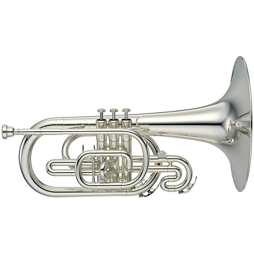

- Description
Originally adapted as a marching brass instrument, mellophones have been seen in orchestral performances due to their unique sounds ranging from rich and vibrant to mellow and soft. The YMP-204MS is not an exception, as it could very well be the perfect balance between marching and orchestral brass. According to Yamaha's official site, the Yamaha Research and Development (R&D) conducted many field tests with different bands, and has redesigned the bracing for a more 'free-blowing' feel. The balance of the instrument is also changed for it to be easier to hold and play.
- Specifications
Name: Yamaha YMP-204S Key: F Finishing: Silver-plated / Clear Laquer Bell Size: 10 in Bore Size: 0.462 in Mouthpiece: MP-14F4 Pricing: RM280 per month - Pricing Explanation
Being a newer member to the orchestral family, the mellophone is slightly more expensive than most beginner instruments,
- Disclaimer
When in possession of the instrument, the user holds full responsibility for what happens to the instrument. If the instrument rented is in anyway damaged, the customer will have to replace said instrument for the rental service. Late returners of the instrument would be issued a warning in a week, and will be subjegated to a RM150 late fee. For every subsequent week, another RM150 would be added.